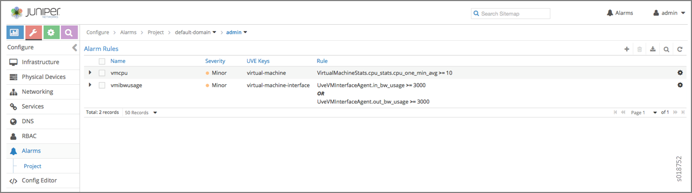
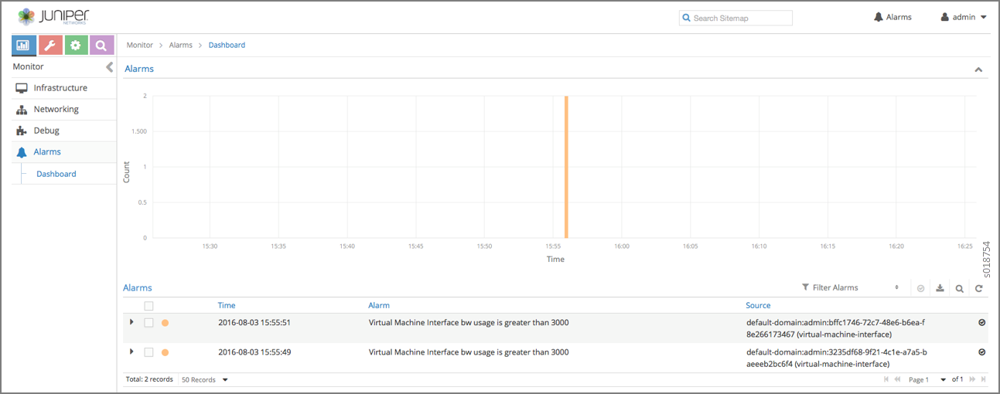
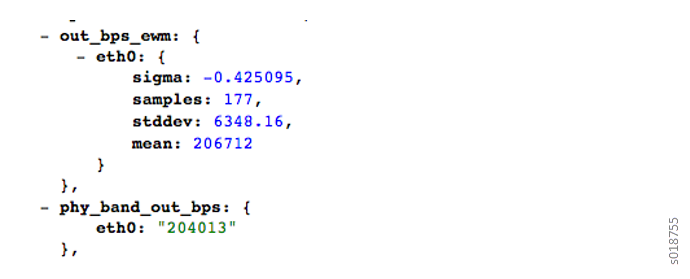
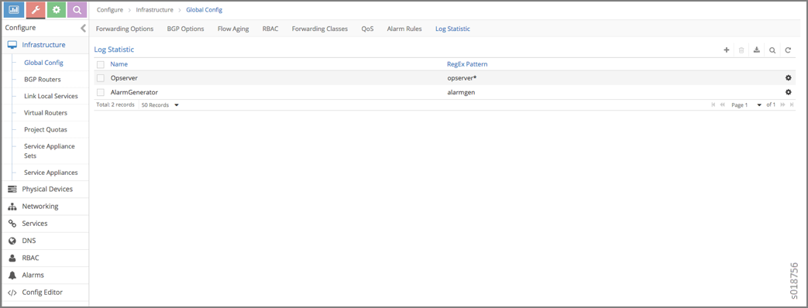
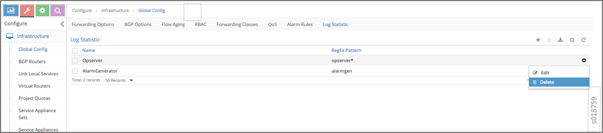

User Configuration for Analytics Alarms and Log Statistics
Configuring Alarms Based on User-Visible Entities Data
Contrail allows you to dynamically configure alarms based on
the user-visible entities (UVE) data. An alarm configuration object
is created based on the alarm configuration XSD schema. The alarm
configuration object is added to the Contrail configuration database,
using the Contrail API server REST API interface.
An alarm configuration object can be anchored in the configuration
data model under global-system-config or
project, depending on the alarm type. Under global-system-config, you should configure virtual network system-wide alarms, such as
those for the analytics node, the config node, and so on. Under project, you should configure alarms related to project
objects, such as virtual networks and similar objects.
To configure and monitor alarms using the Contrail UI:
Navigate to Configure > Alarms> Project, and
select the desired project to access the Alarm Rules page.

Click the Gear icon to add a new alarm configuration or
to edit an existing alarm configuration. Use the Edit screen
to define descriptions and to set up alarm rules. See Table 1 for field descriptions.
Table 1: Alarm Rules Fields
Field
Description
Name
Enter a name for the alarm.
Severity
Select the severity level of the alarm from the list.
UVE Keys
Select the list of UVE types to apply to this alarm.
Description
Enter a description of the alarm.
Rule
Set up the alarm rules. Alarm rules are expressed as
OR of AND terms. Each term has operand1, operand2, and the operation.
Operand1 is the UVE attribute. Operand2 can be either another UVE
attribute or a JSON value. The rules are evaluated in the contrail-alarm-gen service and an alarm is raised or
cleared as needed on respective conditions.
To monitor alarms, navigate to Monitor > Alarms>
Dashboard. The Dashboard screen lists the active
alarms in the system.

Examples: Detecting Anomalies
The purpose of anomaly detection in Contrail is to identify
a condition in which a metric deviates from its expected value, within
given parameters.
Contrail uses a statistical process control model for time-series
anomaly detection that can be computed online, in real-time. Raw metrics
are sent as statistics by Sandesh generators embedded inside the UVEs.
The model uses the running average and running standard deviation
for a given raw metric. The model does not account for seasonality
and linear trends in the metric.
The following example represents part of the UVE sent
by the vRouter to the collector. The raw metrics are phy_band_in_bps and phy_band_out_bps.
The derived statistics are in in_bps_ewm and out_bps_ewm, which are generated when
the model’s EWM algorithm is applied to the raw metrics. The
raw metrics and the derived statistics are part of the UVE and are
sent to the collector.
The following shows part of the UVE that lists the raw metric phy_band_out_bps and the derived statistic out_bps_ewm. The user can define an alarm based on
the values in sigma or in stddev.

Configuring the User-Defined Log Statistic
Any deployment of Contrail cloud over an orchestration system
requires tools for monitoring and troubleshooting the entire cloud
deployment. Cloud data centers are built with a large collection of
interconnected servers that provide computing and storage capacity
for a variety of applications. The monitoring of the cloud and its
infrastructure requires monitoring logs and messages sent to a variety
of servers from many micro services.
Contrail analytics stores all of the monitored messages in the
Contrail database node, and the analytics generates a large amount
of useful information that aids in monitoring and troubleshooting
the network.
With Contrail, the user-defined log statistic feature provides
additional abilities for monitoring and troubleshooting by enabling
the user to set a counter on any regular Perl-type expression. Each
time the pattern is found in any system logs, UVEs, or object logs,
the counter is incremented.
The user-defined log statistic can be configured from
the Contrail UI or from the command line, using vnc_api.
To configure the user-defined log statistic from the Contrail
UI:
Navigate to Configure > Infrastructure > Global Config and select Log Statistic.

To create a log statistic, click the plus (+) icon to
access the Create Log Statistic screen. Enter a name for
the user-defined log statistic, and in the RegExp Pattern field, enter the Perl-type expression to look for and count.
To edit an existing log statistic, select the name of
the statistic and click the Gear icon, then select Edit to access the Edit Log Statistic screen.
To delete a log statistic, select the name of the statistic
and click the gear icon, then select the Delete option.

To configure the user-defined statistic from the vnc_api:
user@host:~# python
Python 2.7.6 (default, Jun 22 2015, 17:58:13)
[GCC 4.8.2] on linux2
Type "help", "copyright", "credits" or "license" for more information.
>> from vnc_api import vnc_api
>> from vnc_api.gen.resource_xsd import UserDefinedLogStat
>> from vnc_api.gen.resource_client import GlobalSystemConfig
>> vnc = vnc_api.VncApi('<username>', '<password>', '<tenant>')
>> gsc_uuid = vnc.global_system_configs_list()['global-system-configs'][0]['uuid']
>> gsc = vnc.global_system_config_read(id=gsc_uuid)
To list the counters:
>> [(x.name, x.pattern) for x in gsc.user_defined_log_statistics.statlist]
[('HostnameCounter', 'dummy'), ('MyIp', '10.84.14.38')]